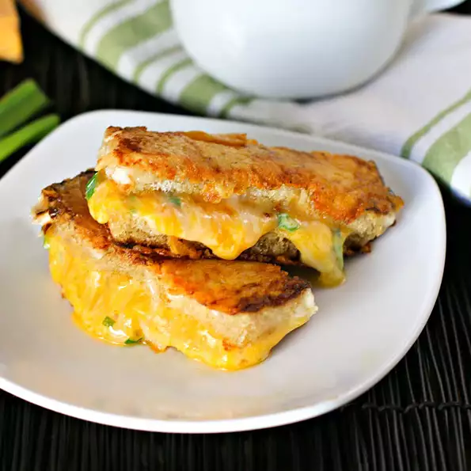

Grilled Cheese Sticks
- Serves: 2
- Prep time: 15 minutes
- Cook time: 4 minutes
- Total time: 19 minutes

You wake up and you have a full day ahead of you, but don't forget to start your day with a gooey treat!
Now, we aren't saying food in stick form is better than normal form... but here is the cheese toasty, in superior stick fashion!
When you need to get up and go, quick and easy, this recipe is just that!
Ingredients
- 1 tablespoon of mayonnaise, divided
- 2 slices of day-old sourdough bread
- 2 tablespoons of shredded parmesan cheese
- 2 tablespoons of finely grated extra-sharp cheddar cheese, at room temperature
- 1 tablespoon of finely grated jack cheese, at room temperature
- 2 teaspoons of minced green onion
- 1 clove of garlic, minced (optional)
- 2 dashes of cayenne pepper (optional)
Steps
- Spread 1/2 teaspoon mayonnaise onto 1 side of each slice of bread. Sprinkle 1 tablespoon Parmesan cheese over mayonnaise layer, pressing cheese firmly into the bread.
- Combine remaining mayonnaise, Cheddar cheese, Jack cheese, green onion, garlic, and cayenne pepper in a bowl.
- Flip 1 bread slice over so the Parmesan layer is facing down, and spread Cheddar cheese mixture onto the bread. Top the Cheddar cheese mixture layer with the other slice of bread, so the Parmesan is on the outside of the sandwich. Cut sandwich into 4 equal slices.
- Heat a nonstick pan over medium heat; turn heat down to medium-low. Place sandwich sticks in the skillet and cook until golden brown and cheese is softly melted, 2 to 3 minutes per side.
Back to top of page
Home